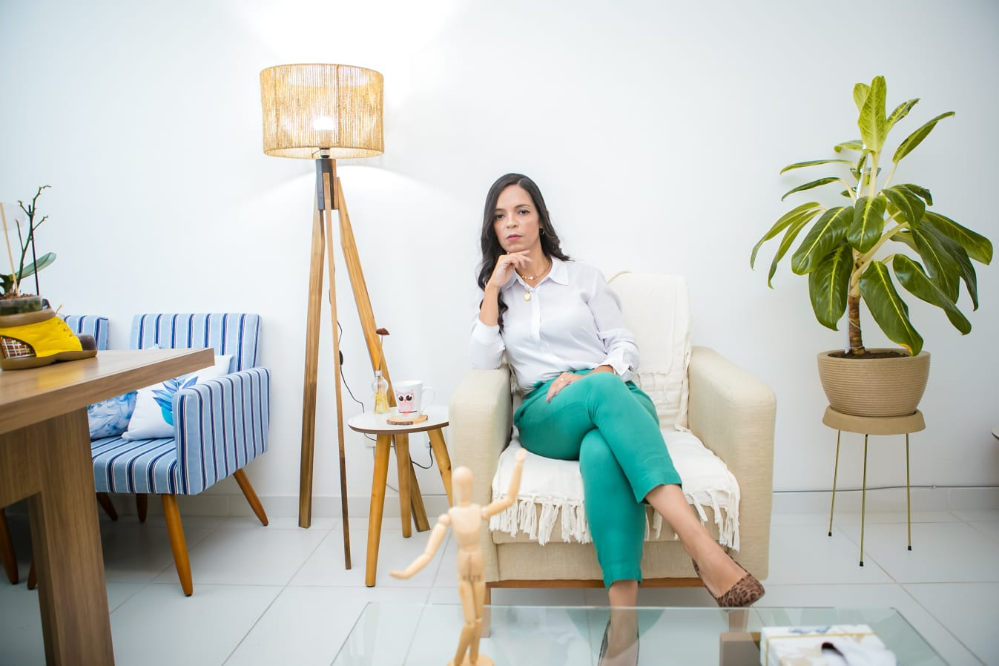

Encontre espaço para a sua voz interior
Atendimento psicanalítico para acolher sua jornada de autoconhecimento e transformação pessoal.
Agendar Conversa Inicial
Luciana Luparele
Especialista em Psicanálise e Psicopedagoga
Sou psicanalista clínica, psicopedagoga e pedagoga, com atuação integrada entre clínica e educação. Trabalho com escuta ativa e abordagem ética para compreender dificuldades de aprendizagem, questões emocionais e desafios relacionais, considerando sempre o sujeito em seu contexto escolar, familiar e social.
Atuo com avaliação e intervenção psicopedagógica, atendimento clínico psicanalítico e orientação à família e à escola, mantendo diálogo constante com equipes multidisciplinares. Minha prática é voltada à construção de estratégias que favoreçam o desenvolvimento emocional, cognitivo e a autonomia do sujeito.
Acredito que aprender e se desenvolver exige mais do que técnica: exige escuta, vínculo e responsabilidade profissional. É a partir disso que conduzo meu trabalho.
- 🖋 Psicopedagoga clínica
- 🧠 Psicanalista
- 📚 Professora há mais de 20 anos
- ❤️ Especialista em luto, ansiedade e transtornos da aprendizagem.
A Jornada Analítica
Compreenda os pilares do nosso trabalho conjunto
A Escuta Analítica
Um espaço de fala livre, atentando não só ao que é dito, mas também às entrelinhas.
O Inconsciente
A investigação cuidadosa de padrões repetitivos para compreender as raízes do sofrimento.
O Vínculo Terapêutico
A relação de confiança construída sessão a sessão, fundamental para sustentar o trabalho profundo.
Pronto para iniciar?
Selecione abaixo o formato de atendimento que você busca e agende sua primeira conversa.